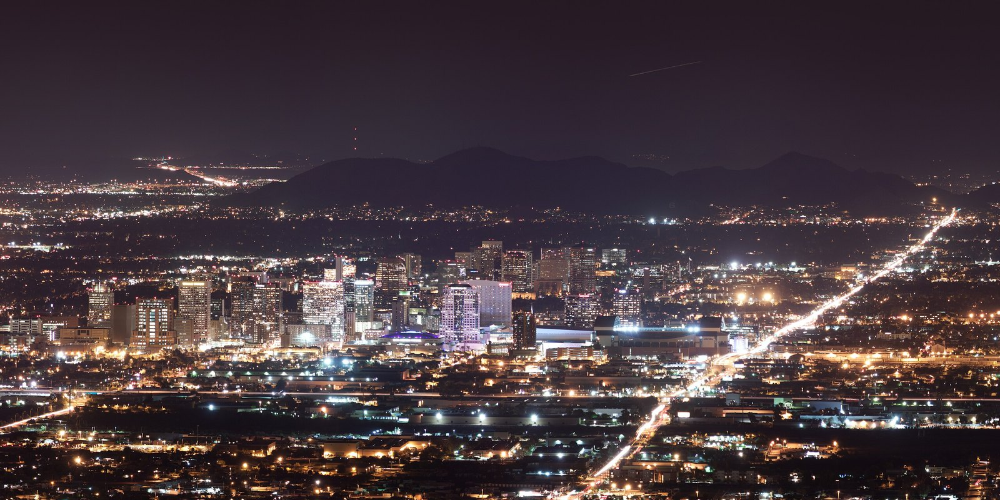
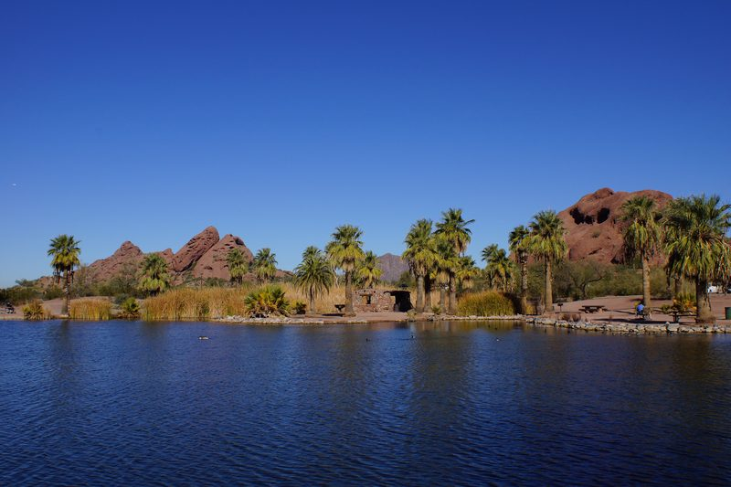
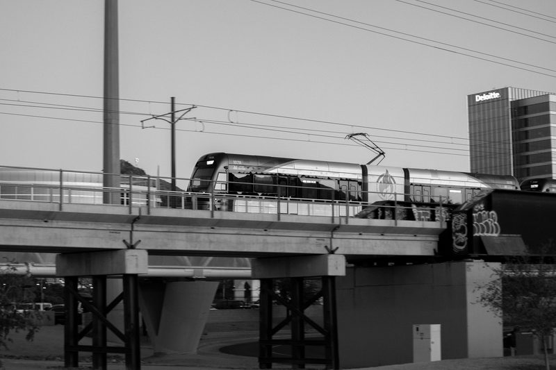
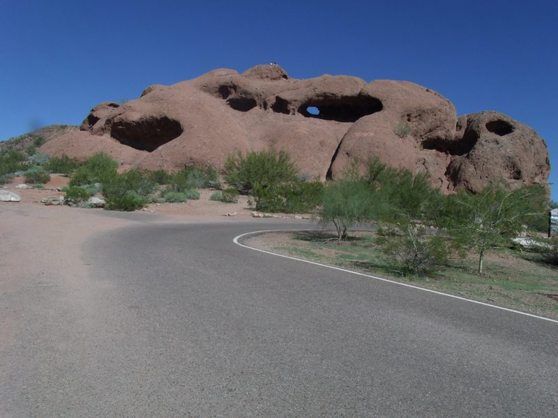

Archive
Every published brief, newest first.
- Monday Nov 23 – Wednesday Nov 25, 2026 · Snapshot compiled Mon Nov 23, 2026, 5:20 pm MST (Urban Concierge - Phoenix)phoenixdailysync-2026-11-23-1720
Around the city

Papago Park, looking toward Camelback Mountain. Photo: Chris English, CC BY-SA 3.0, via Wikimedia Commons 
ASU Gammage, Tempe. Photo: w_lemay, CC BY-SA 2.0, via Wikimedia Commons 
Desert Botanical Garden. Photo: Slywire, CC BY-SA 4.0, via Wikimedia Commons 
Chase Field. Photo: Gage Skidmore, CC BY-SA 2.0, via Wikimedia Commons 
Valley Metro rail at Tempe Town Lake. Photo: JoseE1471, CC BY-SA 4.0, via Wikimedia Commons 
Heard Museum. Photo: Yassie, CC BY-SA 3.0, via Wikimedia Commons 
Hole-in-the-Rock, Papago Park. Photo: Tony the Marine, CC BY-SA 3.0, via Wikimedia Commons


Photos: Wikimedia Commons contributors, used under the license on each caption
Get the Urban Concierge brief by email
Greater Phoenix events, weather and getting-around updates. Unsubscribe anytime.